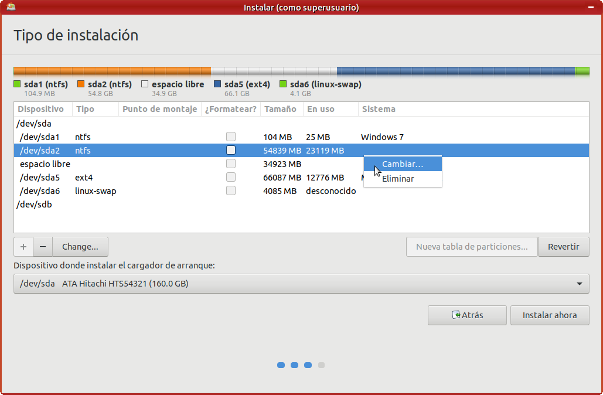

Seleccionar el tipo de instalación
Si se detecta que ya hay instalado algún otro sistema operativo, como cualquier versión de Windows o de otro sistema operativo, el asistente mostrará varias opciones:
- Instalar MAX junto a ellos: lo que permitirá elegir entre los sistemas operativos instalados al arrancar el equipo.
- Borrar disco e instalar MAX: borrará completamente el disco duro seleccionado para instalar sólo MAX.
- Más opciones: esta opción permitirá particionar los discos duros de forma manual, para ajustar así las particiones a sus necesidades.
Atención: Si tuviera Windows 8 o 10 en ordenadores con BIOS UEFI ¡consulte la sección Equipos con BIOS UEFI. Windows 8 y 10 de este manual antes de seguir!
Conservar el sistema operativo anterior
En caso de querer conservar la instalación de Windows (u otro sistema operativo) se seleccionará la primera opción, Instalar MAX junto a ellos, y se pulsará en el botón Continuar, y en la siguiente ventana, se mostrará el espacio de disco duro asignado de forma automática a la instalación de MAX, conservando el sistema operativo original:
Al pulsar en Instalar ahora, se aceptará la configuración de particiones propuesta, el asistenta avisará de los cambios que se van a realizar:
y al pulsar en el botón Continuar se pasará a la ventana de selección de las características y diferentes opciones para la instalación.
Si usted ha optado por esta opción de "Instalar MAX junto a ellos", puede saltar ahora a la sección "Seleccionar características de la instalación".
Particionamiento personalizado
Es necesario que el usuario entienda los siguientes conceptos si quiere realizar un particionamiento personalizado:
| Concepto | Definición |
| Disco duro | Uno de los componentes del ordenador que permite almacenar datos que se conservan incluso cuando el ordenador está apagado. |
| Partición | Parte de un disco duro que permite almacenar datos. |
| Sistema de ficheros | Estructura en la que se almacenan los ficheros y carpetas en una partición. |
| Formateo | Colocación de un sistema de ficheros en una partición. |
| Partición SWAP o de intercambio |
Tipo especial de partición encargada de almacenar datos durante la ejecución que no caben en la memoria RAM (algo habitual). |
| Particionar | Dividir uno o varios discos duros en uno o varios fragmentos. |
| Redimensionar | Cambiar el tamaño de una determinada partición. |
| Montaje | Acto de colocar el contenido de una partición formateada con un sistema de ficheros, a partir de un determinado directorio. |
| Punto de montaje | Directorio a partir del cual se puede acceder al contenido de una partición formateada. |
| / o directorio raíz | Punto de montaje principal de los sistemas GNU/Linux. |
| VFAT | Sistema de ficheros utilizado en sistemas Windows (normalmente Windows 95 y Windows 98) y en pendrives. |
| NTFS | Sistema de particiones utilizado en Windows XP, 2000 y 2003. |
| EXT2 | Antiguo sistema de ficheros de GNU/Linux. |
| EXT3 | Típico sistema de ficheros donde se instalan distribuciones GNU/Linux. |
| EXT4 | Típico sistema de ficheros de última generación donde se instalan distribuciones GNU/Linux. |
Si su disco duro ya contiene una instalación anterior de MAX o una partición de tipo ext3 o ext4, puede pasar directamente al apartado Creación de la partición y selección del punto de montaje, un poco más abajo en esta misma página. Si no es así, antes de comenzar la instalación deberá preparar su disco duro con el propio instalador o con la herramienta GParted, que se explicará más adelante.
Para instalar MAX es necesaria una partición principal con, al menos, 20 GB de tamaño, formateada como ext4 (se pueden utilizar otras particiones formateadas con otros sistemas de ficheros), que utilizará el punto de montaje /
También es recomendable, aunque no obligatorio: una partición swap o de intercambio, con el mismo tamaño que la memoria RAM de la que disponga el equipo.
Opcionalmente, puede reservar una partición de datos con punto de montaje /home con el espacio que estime oportuno para sus documentos, imágenes, vídeos, etc. Si decide crear una partición /home para sus documentos, podrá reducir el tamaño de la partición raíz a unos 10 GB.
Si el disco duro no tiene ningún espacio vacío habrá que redimensionar una de las particiones existentes para conseguirlo.
Para comenzar a realizar un particionado personalizado, elija Más opciones en la pantalla de selección de tipo de instalación:

Y aparecerá un asistente avanzado que mostrará las particiones actuales del disco:

Para reducir de tamaño la partición de Windows, selecciónela (en la imagen es justo la que está encima del espacio libre, marcada con tipo ntfs) y pulse el botón Cambiar... (Change...).

Seleccione el nuevo tamaño de la partición de Windows para conseguir el espacio deseado para MAX, recuerde que necesita como mínimo 20 GB. En este ejemplo se reduce la partición de Windows a 10737 MB, como el disco es de 30 GB conseguimos unos 20 GB aproximadamente de espacio libre para MAX.
Al pulsar el botón Aceptar el asistente ajustará la partición de Windows al nuevo tamaño, este proceso puede tardar unos minutos.
Creación de las particiones y selección del punto de montaje
Como se ha indicado, para la instalación de MAX es necesario crear la partición denominada raíz (/) y opcionalmente la de intercambio (swap). Una vez que
ha conseguido espacio suficiente en el disco seleccione la fila espacio libre y pulse el botón Añadir para crear la partición raíz:
Disminuya el tamaño ofrecido para la partición raíz con el fin de dejar algo de espacio para la partición de intercambio que creará después, seleccione "Utilizar como" sistema de ficheros ext4 transaccional y como "Punto de montaje" la raíz "/". Pulse el botón Aceptar para crear la partición .
A continuación, de la misma manera, seleccione la fila que vuelve a poner espacio libre y pulse el botón Añadir. Seleccione en el desplegable "Utilizar como" la opción área de intercambio.
La regla general es dejar en la partición de intercambio un tamaño igual a la cantidad de memoria RAM que dispone el equipo. En teoría si se dispone de mucha memoria RAM la partición de intercambio puede omitirse, pero lo recomendable es crearla.

Compartir datos entre distintas particiones
Si dispone de espacio suficiente en el disco, quizás le interese crear una partición de Datos donde pueda almacenar documentos a los que se pueda acceder desde cualquiera de los sistemas operativos.
Se crearía de la misma manera, tan sólo debe tener en cuenta que si uno de los sistemas es Windows, forzosamente el sistema de ficheros debe ser FAT32 o NTFS (recomendado), que son los únicos con los que Windows es capaz de trabajar. Por su parte, MAX es capaz de entenderse perfectamente con esos sistemas de ficheros y con otros muchos.
Una vez definidas todas las particiones pulse el botón Instalar ahora, aparecerá la ventana para seleccionar las características de la instalación, que se explican en una sección posterior.